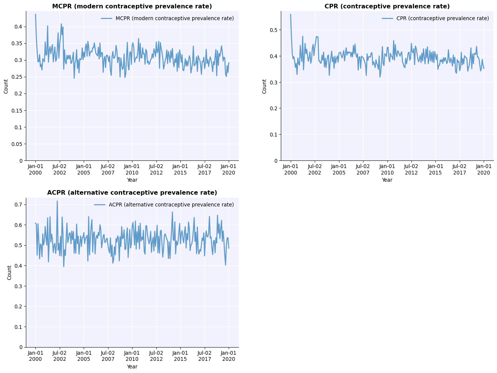
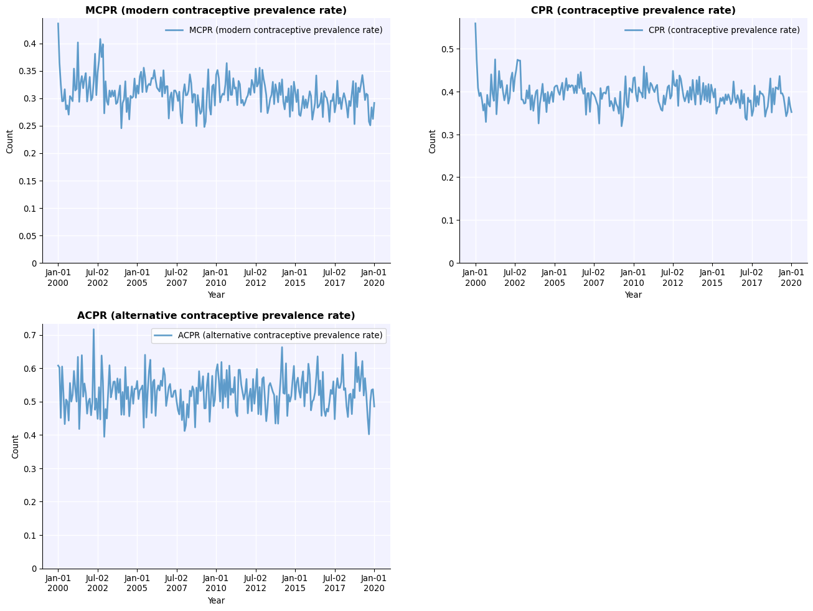

import fpsim as fp
import sciris as sc
import starsim as ss
pars = dict(
n_agents = 1_000,
location = 'kenya',
start_year = 2000,
end_year = 2020,
exposure_factor = 1.0 # Overall scale factor on probability of becoming pregnant
)
method_choice = fp.RandomChoice() Define multiple types of interventions
Interventions
At this point, you should now be able to run a single sim, using default or custom parameters and plot the results. In this tutorial, you will learn how to use interventions.
First, define the basic parmeters as you learned in the previous tutorial.
It is typical to want to test many interventions and compared with a baseline simulation wihtout the intervention. FPsim has the MultiSim class which handles the running of multiple simulations, and provides mechanisms to plot the results together to facilitate comparison. We will use this class here. But first, let’s define each of our individual simulations. To distiguish each simulation in the plots, we will pass one more argument to the sim: its ‘label’. In this tutorial, we will define a baseline scenario and three different types of interventions, then run them all together
1. A simulation without intervention (baseline)
We define our baseline simulation as s1, without any interventions.
s1 = fp.Sim(pars=pars, contraception_module=method_choice, label="Baseline")Loading data from files in /home/cliffk/idm/fpsim/fpsim/locations/kenya/data...
Applying calibration parameters for kenya...2. A simulation with an intervention that changes the EFFICACY of a method
First, let’s have a look at which contraceptive methods we have available.
Methods = fp.make_methods()
for method in Methods.values(): print(f"{method.idx}: {method.label}")0: None
1: Pill
2: IUDs
3: Injectables
4: Condoms
5: BTL
6: Withdrawal
7: Implants
8: Other traditional
9: Other modernThen, let’s add an intervention that changes the efficacy of injectables, and create a new sim with that intervention, called s2.
change_efficacy_intervention = fp.update_methods(eff={"Injectables": 0.99}, year=2010) # new efficacy starts in 2010
s2 = fp.Sim(pars=pars, contraception_module=method_choice,
interventions=change_efficacy_intervention,
label="More effective Injectables")Loading data from files in /home/cliffk/idm/fpsim/fpsim/locations/kenya/data...
Applying calibration parameters for kenya...3. A simulation with an intervention that changes the distribution of DURATIONS on the method
Now, let’s try changing a different aspect of the method: the distribution of time-on-method, which is how we specify the duration women use a method. Time-on-method is parameterized as a distribution, which can be either exponential, lognormal, loglogistic, gamma, or weibull. Which distribution is selected for each contraceptiove method, as well as the default parameters used to inform the distribution, is calucalted based on an analysis of DHS calendar data. This analysis is shown in time_on_method.R in the locations/data_processing folder. To impact the duration of use manually, you can set the relevant parameters manually:
# The baseline duration for Injectables is a lognormal with parameter par1=2, and par2=3
change_duration_intervention = fp.update_methods(dur_use={'Injectables': dict(dist='lognormal', par1=3, par2=0.2)}, year=2010)
# Define a simulaiton for this intervention called s3
s3 = fp.Sim(pars=pars, contraception_module=method_choice,
interventions=change_duration_intervention,
label="Longer time on Injectables")Loading data from files in /home/cliffk/idm/fpsim/fpsim/locations/kenya/data...
Applying calibration parameters for kenya...4. A simulation with an intervention that changes the METHOD MIX
Finally, let’s add a scenrio that impacts the method mix, or the probability of selecting a specific method when a woman starts using one. Method mix is defined as a set of matrices, depending on the method she used previously, her postpartum status, and age. This intervention replaces all of those with a single matrix that you define. It is a set of numbers representing the percent of women that will choose (in this order): * Pill * IUD * Injectable * Condom * BTL * Withdrawal * Implant * Other traditional * Other modern
You can specify the percent who chooses each of these methods, and the year to start using this percentage, as follows:
# The values in method_mix should add up to 1, but if they don't, the intervention update_methods() will autamotailly normalize them to add up to 1.
change_mix = fp.update_methods(method_mix=[0.25, 0.05, 0.05, 0.0, 0.05, 0.3, 0.1, 0.1, 0.0], year=2010.0)
# Define a simulation for this intervention called s4
s4 = fp.Sim(pars=pars, contraception_module=method_choice,
interventions=change_mix,
label='Different mix')Loading data from files in /home/cliffk/idm/fpsim/fpsim/locations/kenya/data...
Applying calibration parameters for kenya...Run multiple simulations
To run all of these simulations together, create a list of all the simulations you want to include, the use msim to run a multisim analysis as follows:
simlist = sc.autolist([s1, s2, s3, s4])
msim = ss.MultiSim(sims=simlist)
msim.run(parallel=False)Initializing sim "Baseline" with 1000 agents
Running "Baseline": 2000.01.01 ( 0/241) (0.00 s) ———————————————————— 0%
Running "Baseline": 2001.01.01 (12/241) (0.04 s) •——————————————————— 5%
Running "Baseline": 2002.01.01 (24/241) (0.09 s) ••—————————————————— 10%
Running "Baseline": 2003.01.01 (36/241) (0.15 s) •••————————————————— 15%
Running "Baseline": 2004.01.01 (48/241) (0.20 s) ••••———————————————— 20%
Running "Baseline": 2005.01.01 (60/241) (0.26 s) •••••——————————————— 25%
Running "Baseline": 2006.01.01 (72/241) (0.31 s) ••••••—————————————— 30%
Running "Baseline": 2007.01.01 (84/241) (0.37 s) •••••••————————————— 35%
Running "Baseline": 2008.01.01 (96/241) (0.42 s) ••••••••———————————— 40%
Running "Baseline": 2009.01.01 (108/241) (0.48 s) •••••••••——————————— 45%
Running "Baseline": 2010.01.01 (120/241) (0.54 s) ••••••••••—————————— 50%
Running "Baseline": 2011.01.01 (132/241) (0.59 s) •••••••••••————————— 55%
Running "Baseline": 2012.01.01 (144/241) (0.65 s) ••••••••••••———————— 60%
Running "Baseline": 2013.01.01 (156/241) (0.71 s) •••••••••••••——————— 65%
Running "Baseline": 2014.01.01 (168/241) (0.77 s) ••••••••••••••—————— 70%
Running "Baseline": 2015.01.01 (180/241) (0.83 s) •••••••••••••••————— 75%
Running "Baseline": 2016.01.01 (192/241) (0.89 s) ••••••••••••••••———— 80%
Running "Baseline": 2017.01.01 (204/241) (0.95 s) •••••••••••••••••——— 85%
Running "Baseline": 2018.01.01 (216/241) (1.02 s) ••••••••••••••••••—— 90%
Running "Baseline": 2019.01.01 (228/241) (1.09 s) •••••••••••••••••••— 95%
Running "Baseline": 2020.01.01 (240/241) (1.15 s) •••••••••••••••••••• 100%
Initializing sim "More effective Injectables" with 1000 agents
Running "More effective Injectables": 2000.01.01 ( 0/241) (0.00 s) ———————————————————— 0%
Running "More effective Injectables": 2001.01.01 (12/241) (0.04 s) •——————————————————— 5%
Running "More effective Injectables": 2002.01.01 (24/241) (0.09 s) ••—————————————————— 10%
Running "More effective Injectables": 2003.01.01 (36/241) (0.15 s) •••————————————————— 15%
Running "More effective Injectables": 2004.01.01 (48/241) (0.20 s) ••••———————————————— 20%
Running "More effective Injectables": 2005.01.01 (60/241) (0.26 s) •••••——————————————— 25%
Running "More effective Injectables": 2006.01.01 (72/241) (0.31 s) ••••••—————————————— 30%
Running "More effective Injectables": 2007.01.01 (84/241) (0.37 s) •••••••————————————— 35%
Running "More effective Injectables": 2008.01.01 (96/241) (0.43 s) ••••••••———————————— 40%
Running "More effective Injectables": 2009.01.01 (108/241) (0.49 s) •••••••••——————————— 45%
Running "More effective Injectables": 2010.01.01 (120/241) (0.55 s) ••••••••••—————————— 50%
Running "More effective Injectables": 2011.01.01 (132/241) (0.60 s) •••••••••••————————— 55%
Running "More effective Injectables": 2012.01.01 (144/241) (0.66 s) ••••••••••••———————— 60%
Running "More effective Injectables": 2013.01.01 (156/241) (0.73 s) •••••••••••••——————— 65%
Running "More effective Injectables": 2014.01.01 (168/241) (0.79 s) ••••••••••••••—————— 70%
Running "More effective Injectables": 2015.01.01 (180/241) (0.85 s) •••••••••••••••————— 75%
Running "More effective Injectables": 2016.01.01 (192/241) (0.91 s) ••••••••••••••••———— 80%
Running "More effective Injectables": 2017.01.01 (204/241) (0.97 s) •••••••••••••••••——— 85%
Running "More effective Injectables": 2018.01.01 (216/241) (1.04 s) ••••••••••••••••••—— 90%
Running "More effective Injectables": 2019.01.01 (228/241) (1.10 s) •••••••••••••••••••— 95%
Running "More effective Injectables": 2020.01.01 (240/241) (1.16 s) •••••••••••••••••••• 100%
Initializing sim "Longer time on Injectables" with 1000 agents
Running "Longer time on Injectables": 2000.01.01 ( 0/241) (0.00 s) ———————————————————— 0%
Running "Longer time on Injectables": 2001.01.01 (12/241) (0.04 s) •——————————————————— 5%
Running "Longer time on Injectables": 2002.01.01 (24/241) (0.09 s) ••—————————————————— 10%
Running "Longer time on Injectables": 2003.01.01 (36/241) (0.15 s) •••————————————————— 15%
Running "Longer time on Injectables": 2004.01.01 (48/241) (0.21 s) ••••———————————————— 20%
Running "Longer time on Injectables": 2005.01.01 (60/241) (0.27 s) •••••——————————————— 25%
Running "Longer time on Injectables": 2006.01.01 (72/241) (0.33 s) ••••••—————————————— 30%
Running "Longer time on Injectables": 2007.01.01 (84/241) (0.39 s) •••••••————————————— 35%
Running "Longer time on Injectables": 2008.01.01 (96/241) (0.45 s) ••••••••———————————— 40%
Running "Longer time on Injectables": 2009.01.01 (108/241) (0.51 s) •••••••••——————————— 45%
Running "Longer time on Injectables": 2010.01.01 (120/241) (0.57 s) ••••••••••—————————— 50%
Running "Longer time on Injectables": 2011.01.01 (132/241) (0.63 s) •••••••••••————————— 55%
Running "Longer time on Injectables": 2012.01.01 (144/241) (0.69 s) ••••••••••••———————— 60%
Running "Longer time on Injectables": 2013.01.01 (156/241) (0.77 s) •••••••••••••——————— 65%
Running "Longer time on Injectables": 2014.01.01 (168/241) (0.84 s) ••••••••••••••—————— 70%
Running "Longer time on Injectables": 2015.01.01 (180/241) (0.90 s) •••••••••••••••————— 75%
Running "Longer time on Injectables": 2016.01.01 (192/241) (0.96 s) ••••••••••••••••———— 80%
Running "Longer time on Injectables": 2017.01.01 (204/241) (1.03 s) •••••••••••••••••——— 85%
Running "Longer time on Injectables": 2018.01.01 (216/241) (1.10 s) ••••••••••••••••••—— 90%
Running "Longer time on Injectables": 2019.01.01 (228/241) (1.17 s) •••••••••••••••••••— 95%
Running "Longer time on Injectables": 2020.01.01 (240/241) (1.24 s) •••••••••••••••••••• 100%
Initializing sim "Different mix" with 1000 agents
Running "Different mix": 2000.01.01 ( 0/241) (0.00 s) ———————————————————— 0%
Running "Different mix": 2001.01.01 (12/241) (0.04 s) •——————————————————— 5%
Running "Different mix": 2002.01.01 (24/241) (0.10 s) ••—————————————————— 10%
Running "Different mix": 2003.01.01 (36/241) (0.16 s) •••————————————————— 15%
Running "Different mix": 2004.01.01 (48/241) (0.22 s) ••••———————————————— 20%
Running "Different mix": 2005.01.01 (60/241) (0.28 s) •••••——————————————— 25%
Running "Different mix": 2006.01.01 (72/241) (0.34 s) ••••••—————————————— 30%
Running "Different mix": 2007.01.01 (84/241) (0.40 s) •••••••————————————— 35%
Running "Different mix": 2008.01.01 (96/241) (0.45 s) ••••••••———————————— 40%
Running "Different mix": 2009.01.01 (108/241) (0.51 s) •••••••••——————————— 45%
Running "Different mix": 2010.01.01 (120/241) (0.57 s) ••••••••••—————————— 50%
Running "Different mix": 2011.01.01 (132/241) (0.63 s) •••••••••••————————— 55%
Running "Different mix": 2012.01.01 (144/241) (0.69 s) ••••••••••••———————— 60%
Running "Different mix": 2013.01.01 (156/241) (0.75 s) •••••••••••••——————— 65%
Running "Different mix": 2014.01.01 (168/241) (0.81 s) ••••••••••••••—————— 70%
Running "Different mix": 2015.01.01 (180/241) (0.87 s) •••••••••••••••————— 75%
Running "Different mix": 2016.01.01 (192/241) (0.93 s) ••••••••••••••••———— 80%
Running "Different mix": 2017.01.01 (204/241) (0.99 s) •••••••••••••••••——— 85%
Running "Different mix": 2018.01.01 (216/241) (1.06 s) ••••••••••••••••••—— 90%
Running "Different mix": 2019.01.01 (228/241) (1.12 s) •••••••••••••••••••— 95%
Running "Different mix": 2020.01.01 (240/241) (1.19 s) •••••••••••••••••••• 100%
MultiSim("Baseline"; n_sims: 4; base: Sim(Baseline; n=1000; 2000—2020; demographics=deaths; connectors=contraception, edu, fp))Plot contraceptive use for all of the simulations you just ran.
msim.plot(key='cpr');Figure(1536x960)


